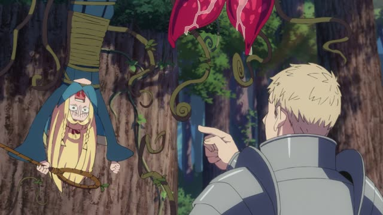
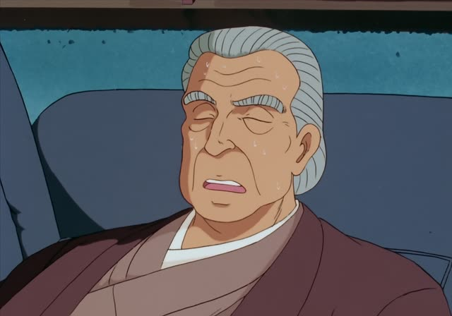
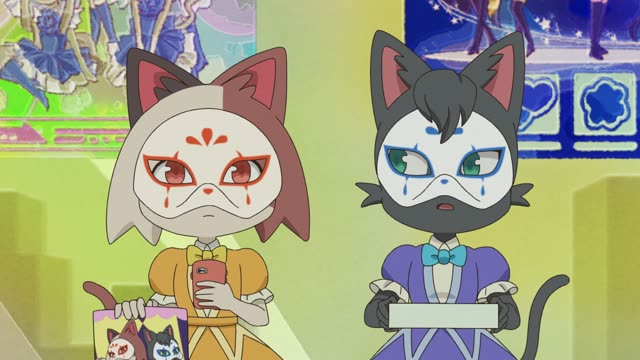
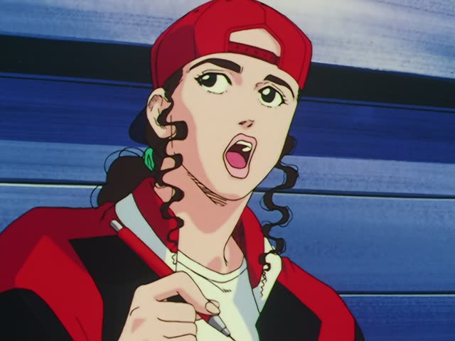
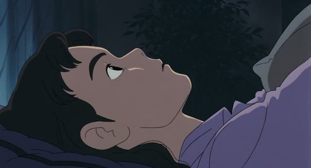

一番 (いちばん)
Death Note · Episode 11
それが一番正しい選択です。
"That's the right choice." [literally: the most correct choice]
一番 means "number one". Put it right before an adjective and it means the most: 一番 + 正しい = "the most correct".
On this card, out of all the ways to answer, this one wins. The sentence answers "Which choice is the most correct?": それ.
一番 is the same in polite and casual speech. The politeness comes from the end: です here, だ or nothing with friends.

Dungeon Meshi · Episode 1
えっ 一番 イヤ!
"What? That's the one I hate most!"
一番 + a describing word = "the most". On this card, she hears which monster it is: 一番 + イヤ ("awful") = the worst one.
Quick Examples
Showing a friend a family photo.
家族の中で、父が一番背が高いです。
"In my family, my dad is the tallest."
X の中で = "among X". It sets the group, then 一番 picks the winner.
PoliteA friend asks about the seasons in Japan.
秋が一番好きです。
"I like autumn the most."
一番好き = "favorite". Very common.
PoliteLooking at three cakes in a bakery window.
どれが一番おいしい？
"Which one is the tastiest?"
Question word + が + 一番. Use どれ for three or more things.
CasualA kid asks about mountains.
日本で一番高い山は富士山だよ。
"The tallest mountain in Japan is Mt. Fuji."
Place + で sets the area: "in Japan".
CasualWith and without
この部屋は広いです。
"This room is big." Just a description, no comparison.
この部屋が一番広いです。
"This room is the biggest." Now it beats all the other rooms.
Notice は turns into が. With 一番 you're picking one thing out of a group, and が is the particle for "this one, not the others".
Examples from Media

Oishinbo · Episode 39
皆さん、一番お好きなものは何ですか？
"Everyone, what do you like best?"
一番好き = "like most". お好き is an extra-polite 好き.

Odd Taxi · Episode 2
市村さんは何してる時が一番楽しいですか？
"Ichimura-san, what do you enjoy doing most?"
一番楽しい = "most fun". 何してる時 = "when doing what".

When Marnie Was There
いいえ、本人に聞くのが一番です。
"No, asking her yourself is best."
本人に聞く ("asking the person herself") + のが + 一番 = "asking her is best". の turns the verb into a thing.

YouTube · video
私は一番下。
"I'm the youngest."
一番 works with position words too: 一番下 = "the very bottom", here the youngest sibling.

Slam Dunk · Episode 46
今日一番の大歓声ね。
"The biggest cheer of the day."
今日一番の: "the most ... today".

Shirokuma Cafe · Episode 17
お前がいちばん働いたからな。
"You worked the most, after all."
いちばん goes before the verb here.

Shirokuma Cafe · Episode 47
いちばんコクがあるっす。
"This one has the richest flavor."
っす is a rough, casual です.

Only Yesterday
どれが一番好き？
"Which do you like best?"
Further Reading
A Dictionary of Basic Japanese Grammar
Entry "ichiban" · pp. 148–149